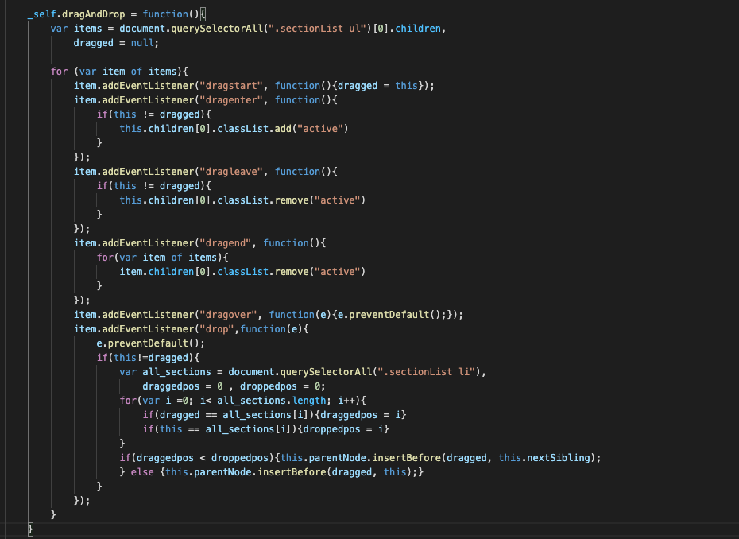

Whether the panel is in horizontal or vertical format/layout, the user is able to drag and drop each section inside the list to reorder them, to fulfill user's wish of the priority of each of the sections. To do it, simply drag the section name to the place of desire.
This is useful in cases where the user does not like the current ordering of the sections from time to time, and this feature gives the user the option to rearrange.
